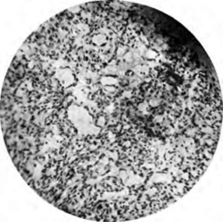

Chapter XI. Endotheliomata
Description
This section is from the book "Skin Cancer", by Henry H. Hazen, A.B., M.D.. Also available from Amazon: Skin Cancer.
Chapter XI. Endotheliomata
Among pathologists there is still much confusion regarding the status of endotheliomas, and what tumors should be called by this name. In a recent article Fick* contends that the pathological entity known as endothelioma never has and never can exist, and that the so-called endothelial cells are in reality epithelial in origin, perhaps derived from some of the glandular elements. On the other hand, Zeit,* in an excellent article, maintains that many of the so-called alveolar sarcomata and carcinomata are undoubtedly examples of endotheliomata. This confusion is undoubtedly due to the variability of the cells. Zeit remarks: "Morphologically, an endothelioma may resemble typical (adenoma) or atypical (carcinoma) organoid structures, or typical (fibroma) or atypical (sarcoma) histoid growths. It is extremely confusing for the student who has learned how to diagnose common atypical histoid growths, as sarcomata and atypical organoid tumors as carcinomata or endotheliomata, to read of the diagnosis of an atypical organoid tumor by Billroth as alveolar sarcoma; by Eindfleisch as sarcoma endotheliale; by Waldeyer and Kolaczek as angiosarcoma; by Fischer and Cramer as endothelial sarcoma." And the author much fears that it is not alone the student who is confused, but even some of these very writers themselves.
Zeit goes on to say that a correct clinical diagnosis is of the greatest importance to the surgeon because endothelial tumors grow very' much more slowly than sarcomata, and do not produce metastases until they have existed for some years. At the same time, they are very prone to recur after operative removal.
The following scheme of classification is usually adopted:
1. Lymphangioendothelioma.
2. Hemangioendothelioma.
3. Perithelioma.
The perithelial tumors originate from the endothelium lining the perivascular lymph spaces, and hence there is some discussion as to whether they should be called hemangioendotheliomas or lymphangioendotheliomas, according to some authors.3 On the other hand, Zeit emphatically says: "'The perithelial membrane must be differentiated from the perivascular lymph spaces of His. which he found surrounding the adventitia of arteries, veins, and capillaries of the central nervous system- The perithelium is the outer lining of the adventitia of blood vessels, outside of which is the perivascular lymph space." Zeit further states that the true peritheliomata are the tumors arising from the perithelium and not from the lymph space, and hence should be called licmangioendotlidioma perivascu-lare.
*Fick: Dermat. Wchnschr., 1912, liv, 488. aZeit: Jour. Amer. Med. Assn., 1906, xlvi, 567.
At any rate, up to the present time, there is in the literature but one definite case report of a perithelioma of the skin, and that is a case reported by Brandeis and Pouget.4 where there were a number of metastases from a tumor of the adrenals.
From carcinomas the histological diagnosis can be made from carefully noting the following differences, according to Zeit:
1. "The tumor cells in endothelioma are intimately connected with the stroma, and cannot be brushed out of the stroma, as in the case of carcinoma, in which the epithelial cells may also retract from the stroma and show spaces.
2. "Endothelial cells produce intracellular cement substance and are closely packed together, whereas the epithelial cells in carcinoma have no intercellular substance and form no compact layers.
3. "In endothelioma delicate fibrillar processes extend from the walls of the alveoli into the proliferated cell masses. They are absent in carcinoma.
4. "In endothelioma the cell masses consist of a dense mosaic of many layers of cells, with small sharply-outlined nuclei, surrounded by a broad envelope of clear, glassy perinuclear protoplasm. Carcinoma cells have large vesicular nuclei, with a moderate amount of perinuclear protoplasm, more or less granular.
5. i;In endothelial tumors the cells are arranged in the form of cdiuJ&r cords and cylinders (round masses in carcinoma), and may separate out hyaline material (cylindroma) or form lumina-like ma**** 'sieve-like; in the cellular cords, due to secretory processes of endothelial cells.
0. "To distinguish the endothelial tumors from sarcomata, it is to be remembered that the former have an organoid, the latter a histoid, structure. According to this definition, every large-cell sarcoma with a well-developed stroma, which was formerly called alveolar sarcoma, would be called an endothelioma".
*Adami: Principles of Pathology, i, 758.
*ISran'leia and Pouget: Ann. de Dermat. et de Syphil., 1910, 6th ser., i, 606.
As Hertzler* well points out, however, there may be so many changes associated with an endothelioma that it is next to impossible for any one except a very highly trained pathologist to correctly diagnose it. There may occur a hypertrophy of both the number and size of the vessels involved, be they lymph or blood channels, or in other instances there may occur a great increase in the amount of fibrous tissue present between the cells. The cells may undergo marked degeneration, so as to almost resemble cancer pearls, except that the keratin is lacking. The vessels may or may not retain an open lumen.
Endotheliomas of the skin are very rare tumors, and such textbooks as Crocker, Hyde, Stelwagon, Pusey, and even Mracek's extensive Handbuch either make no mention of the condition, or else refer only to the so-called endothelioma capitis.
In 19076 Gottheil reviewed the literature, in addition to reporting a case of his own. He calls attention to the fact that the lesions have varied greatly in clinical characteristics, and that as yet we have no definite criteria by which they can be diagnosed with certainty.
Most of the lesions have appeared upon the scalp, either as single or as multiple tumors. In Braun's7 case there was a solitary lesion that closely resembled a rodent ulcer, especially as the edge was markedly indurated. In the case reported by Allen* there was a single cartilaginous lesion, while in HartzeU's9 case the neoplasm was softer and of a yellowish color. Von Waldheim* recorded an instance where there were multiple, flat, smooth tumors covered by unaltered epidermis. In the patient reported by Gottheil there was a solitary, deeply pigmented tumor, occurring upon the sole of the foot, and closely simulating a melanoma, except that the growth had been comparatively slow. It recurred about six months after removal by the knife. In the discussion on this case, Bulkley recorded a similar case upon the foot, which likewise recurred after operative removal, but which was finally cured by the x-rays. Dr. Cocks referred to a case which was clinically diagnosed as molluscum fibrosum.
*Hertzler: Treatise on Tumors.
*Gottheil: Jour. Amer. Med. Assn., 1907, xlviii, 93. 7Braun: Monats. f. prakt. Dermat., 1893, xvii, 585. 8 Allen: Monats. f. prakt. Dermat., 1900, xxxi, 47. •Hartzell: Brit. Jour. Dermat., Oct., 1904.
*von Waldheim: Arch. f. Dermat. u. Syphil., 1902, lx, 215.
The author has recently had a very interesting case under his own care. The patient was a maiden lady, aged 50, who had a small blood-red, somewhat friable, growth situated back of her right ear, where the spectacles had irritated it. The growth was about 8 mm. in diameter, was distinctly pedunculated, and there was no induration around the edge. It had been present about two months. On account of the rapid growth, the condition was diagnosed as a sarcoma, and was completely excised under local anesthesia, and the wound cauterized with acid nitrate of mercury. Five x-ray exposures were then given. There has been no recurrence in two years.
Fig. 64.-Histology of lymphangioendothelioma. (Author's collection).
The growth was diagnosed microscopically as lymphangioendothelioma by Dr. Welch, of Johns Hopkins (Fig. 54).
The proper treatment is broad local excision, probably accompanied by cauterization, for the growths undoubtedly have a marked tendency to return at the site of the operation, although apparently they do not form metastases.
It must be especially noted that these growths have nothing whatever to do with the multiple, benign, cystic growths, properly called syringocystadenoma. Many authors insist that the latter aije of endothelial origin, and within a short time Saalfeld* has attempted to describe two varieties, one springing from the lymphatic endothelium, and one from the endothelium of the blood vessels. A careful reading of his article, however, must convince one that the origin was really in the epithelium of the sweat ducts, as in the case so well described by Sutton* and confirmed by Welch.
*Saalfeld: Technical Supplement Urol, and Cutan. Review, 1913, 1, 166.
Continue to:
Tags
bookdome.com, books, online, free, old, antique, new, read, browse, download